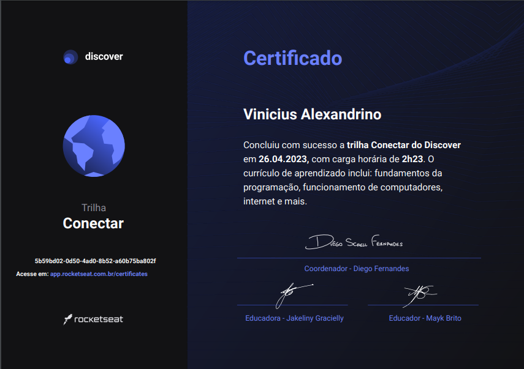

20 de Março de 2023
Jornada do Zero à Primeira Vaga 📝

Faaaala galera! Me chamo Vinícius e vou monstrar nessa timeline como começei. Sempre fui apaixonado por tecnologia e desde de sempre imaginei trabalhar nessa área, e por ter amigos no ramo da programação eles me idicaram a Rocketseat e eu fui pesquisar melhor sobre, foi então que conheci o Dicover onde peguei meu primeiro certificado na trilha conectar, que para mim foi muito gratificante e ainda sigo estudando no discover onde estou aprendendo muito e me deu uma exelente base sobre o que é programação. Então aqui vou compartilhar com vocês meu primeiro certificado.